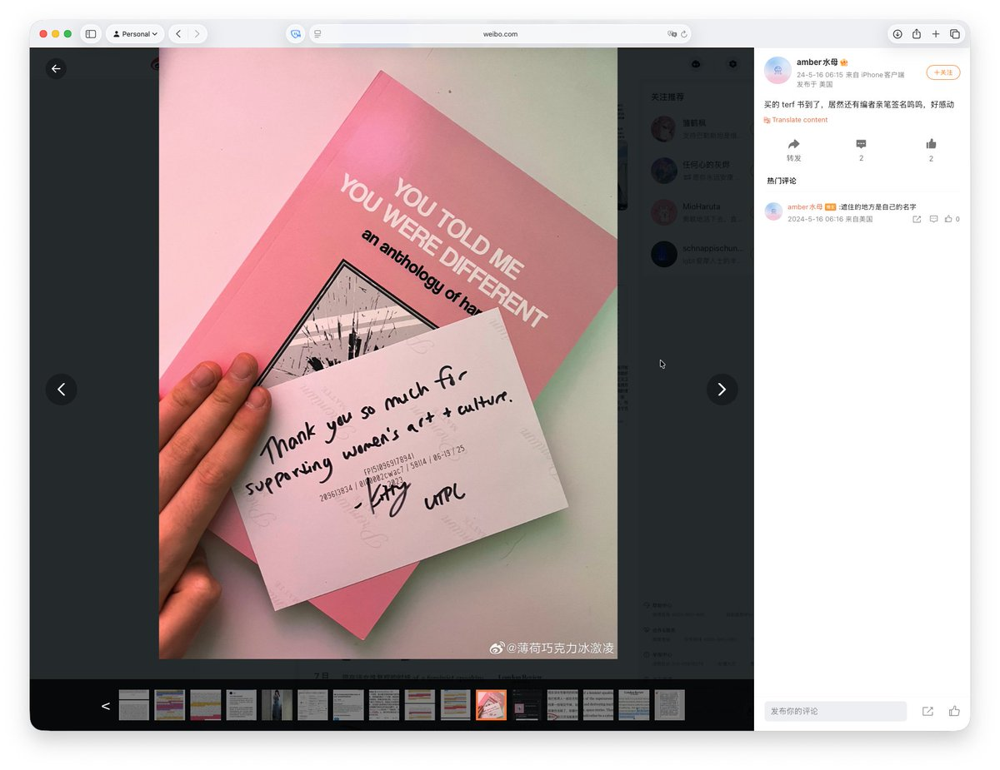

一个很简单的自由逻辑：拒绝跨性别存在的人伤害了跨性别的存在，所以侵犯了所有人跨性别的自由，从自由原则来看，侵犯他者自由的自由应当被约束。
而跨性别存在并没有侵犯顺性别存在，跨性别只是改变了自己的性别，并且更加带有符号语言的，划分了顺性别是什么的边界，如果没有跨性别，难道顺性别的符号就不存在边界了吗？存在的，顺性别的边界就是顺从菲勒斯叙事的边界，那么存在顺从菲勒斯的边界的叙事，也就能产生意识到这个叙事的叙事者，而意识到自己是在顺从菲勒斯叙事本身不在菲勒斯的叙事范围内，也就是反菲勒斯叙事，存在不是顺性别者的叙事者，那么所以性别里本身就应该存在跨性别，从这个角度来论述，顺性别者拒绝任何其他叙事的存在都是在侵犯其他叙事本身应该和顺性别叙事共存的自由。

而跨性别存在并没有侵犯顺性别存在，跨性别只是改变了自己的性别，并且更加带有符号语言的，划分了顺性别是什么的边界，如果没有跨性别，难道顺性别的符号就不存在边界了吗？存在的，顺性别的边界就是顺从菲勒斯叙事的边界，那么存在顺从菲勒斯的边界的叙事，也就能产生意识到这个叙事的叙事者，而意识到自己是在顺从菲勒斯叙事本身不在菲勒斯的叙事范围内，也就是反菲勒斯叙事，存在不是顺性别者的叙事者，那么所以性别里本身就应该存在跨性别，从这个角度来论述，顺性别者拒绝任何其他叙事的存在都是在侵犯其他叙事本身应该和顺性别叙事共存的自由。

水母在 2024 年发微博称，自己买了一本 TERF 书籍，「还有编者亲笔签名呜呜」「好感动」，经 Gemini 查证，确实是一个反跨书籍：
1. 书中的引言和内容明确将焦点放在了“跨性别女性对女性的伤害”上。书中在描述跨性别女性时，刻意使用了带有性别批判色彩的术语，如“male trans https://t.co/2gpForZMg4
1. 书中的引言和内容明确将焦点放在了“跨性别女性对女性的伤害”上。书中在描述跨性别女性时，刻意使用了带有性别批判色彩的术语，如“male trans https://t.co/2gpForZMg4